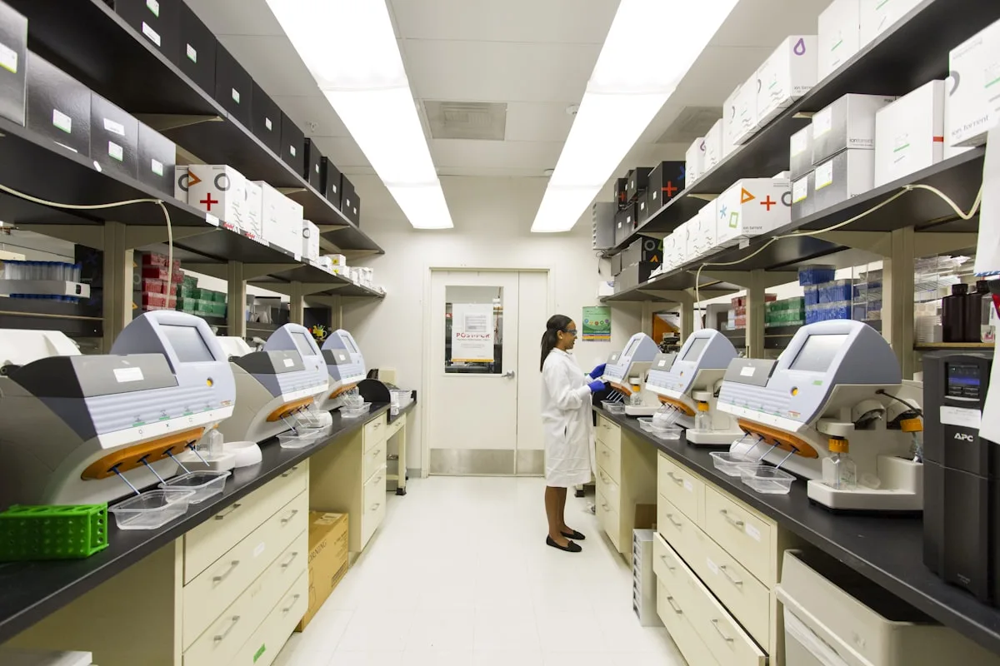

A blood donation takes as little as 45 minutes from registration to refreshments. In that time, you provide up to four separate life-saving components to patients who may be waiting hours away. This is what happens to your donation.

Find your nearest donation centre and book an appointment online. First-time donors receive a full orientation from our nursing team.
Find a Centre